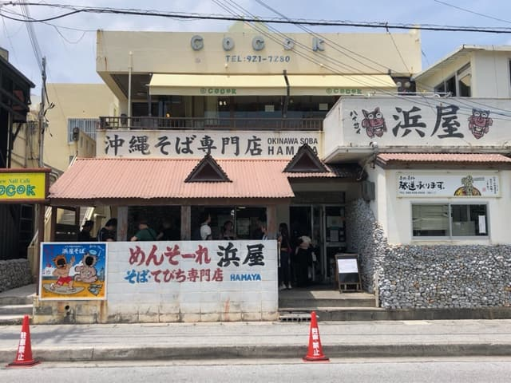
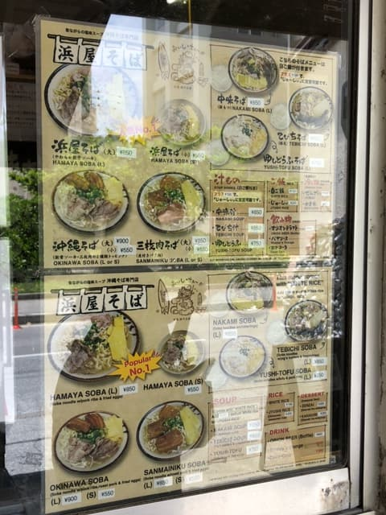
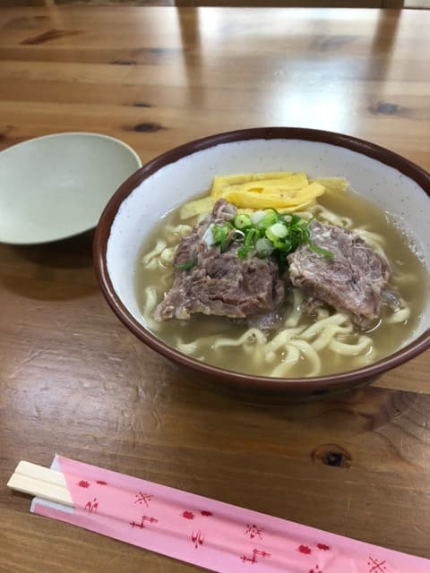
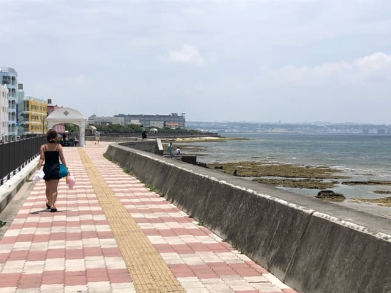
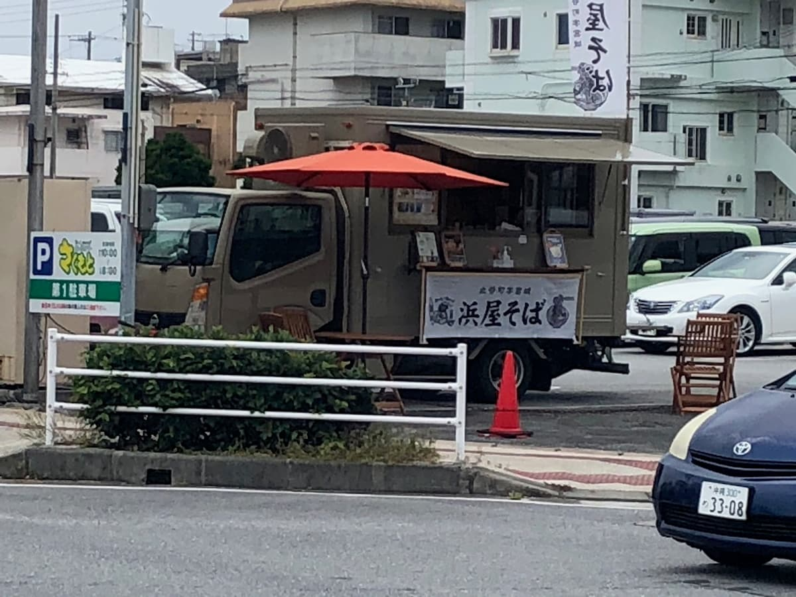
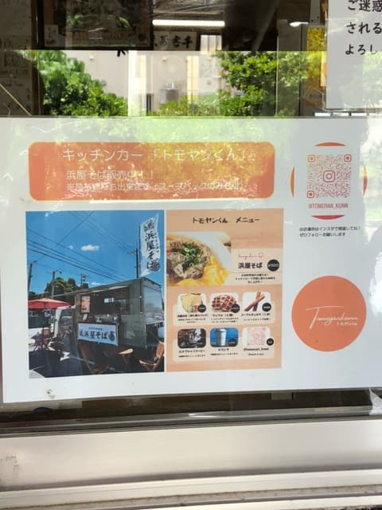

SNS 등에서 인기 있는 가게죠😊 꽤 오랜만에 먹었습니다(2023년 5월)


가게 이름과 같은 '하마야 소바'를 주문

우선 국물을 한 모금. 담백한 계열의 맛에 아주 살짝 돼지뼈가 우러난 느낌이라, 다른 가게 국물과는 다르네요😊 면은 중간 굵기 면, 건더기인 뼈 있는 돼지갈비(혼소키)와 불에 구운 연골 돼지갈비(난코츠 소키)도 소금으로 간을 한 것 같아서 담백한 계열입니다.
평가(9점/15점): 무난하게 맛있습니다. 인기 가게라 평일에도 줄을 서지만, 회전은 그럭저럭 빠르니 조금 기다리면 들어갈 수 있을 거예요. 주차장이 가게 옆에 2대, 조금 떨어진 곳에 7대분 있는 것 같은데, 이번에 저는 바닷가 도로의 호안을 따라 안쪽에 세웠습니다^^; 이곳 바다(미야기 해안)는 파도가 없는 날은 다이빙, 파도가 있으면 서핑 포인트로 인기가 있어서, 호안을 따라 노상 주차도 많습니다. 푸드트럭도 하는 것 같으니, 그쪽이 줄 서지 않고 먹을 수 있을 것 같아요😊
면: ★★★☆☆（3）
수프: ★★★☆☆（3）
토핑: ★★★☆☆（3）


